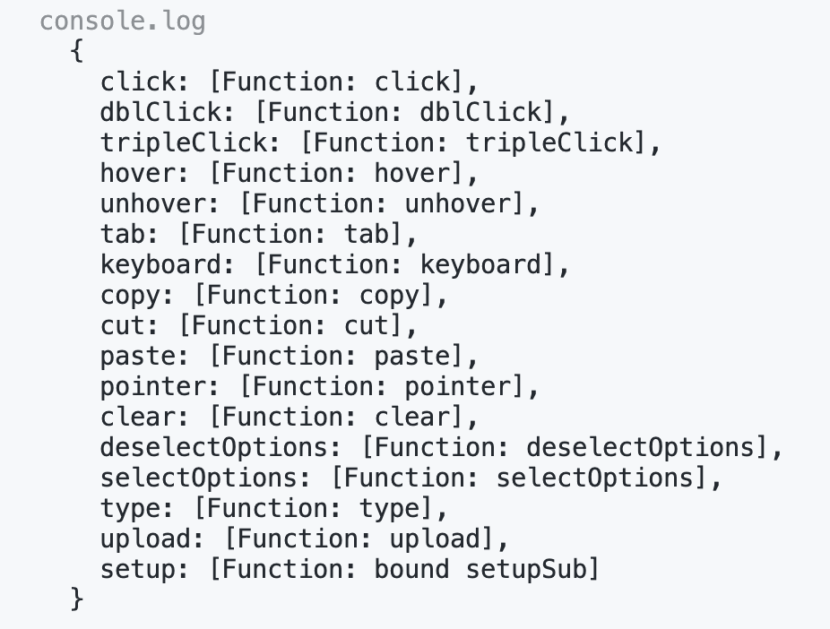

Testing Web Applications
Testing Output on Props Change
Today we will continue working with the React testing library to test rendered DOM elements. This objective will focus on testing data being passed as props and testing props changes that may happen in a component.
Often, in a React app, the user interaction inside a component may trigger a call to a child component that receives props. This will cause the app to re-render (update one or more components on the screen) while maintaining the state. When testing this child component, you will want to simulate the re-render with the updated props.
In some cases, when props are updated, you'll want to run a second test on the same component, to make sure that the component is updating properly. You could write an additional test, render the component with a different prop, and make the new assertion:
test("calling render with prop", () => {
render(<NumberDisplay number={1} />)
expect(screen.getByTestId("number-display")).toHaveTextContent("1")
})
test("calling render with different prop", () => {
render(<NumberDisplay number={2} />)
expect(screen.getByTestId("number-display")).toHaveTextContent("2")
})But a fresh new render might not be ideal! You will have to write one test for each prop, which may become tiring after a while. Besides, the component is unmounting and re-mounting for each test, which is not necessarily what you want to do. Every time the component mounts, it will lose state, and possibly trigger effects.
To simulate a more realistic behavior, where components re-render upon a prop change, there is a built-in method called rerender(), which will re-render the component as it would happen in the browser. The rerender() method is returned by render() when you perform the initial render (mount) and can be used later in the test.
Howto Build It
You could spin up a new project with:
npx @bloomtools/react@0.1.28 testing-props
cd testing-props
npm installThen create the NumberDisplay.test.js file inside the frontend/components/__tests__ directory, with this content:
import React from "react"
import { render, screen } from "@testing-library/react"
import "@testing-library/jest-dom"
const NumberDisplay = ({ number }) => {
return (
<div>
<span data-testid="number-display">{number}</span>
</div>
)
}
test("calling render with multiple props", () => {
// The {rerender} method is returned by render()
const { rerender } = render(<NumberDisplay number={1} />)
expect(screen.getByTestId("number-display")).toHaveTextContent("1")
rerender(<NumberDisplay number={2} />)
expect(screen.getByTestId("number-display")).toHaveTextContent("2")
})And finally, run the test with:
npm test -- NumberDisplay.test.jsBoth tests should pass and the code looks cleaner, simulating the actual behavior of the component on a live page!
Although you can use the rerender method in other situations, it is especially useful when simulating components calling a child component with props. That way, you can re-render without losing context (state, controlled inputs etc.).
Simulating Interactions with userEvent
Moving on to another level of component testing, you will now learn how to simulate user interactions in your tests. As you know, the React-testing library is designed to mimic how a human interacts with a website, so having a virtual user perform actions is possibly the ultimate form of testing React components! For that, you will be using the user-event library, which can simulate the mouse, keyboard and many other events.
Inside your test, the component is not being rendered in the browser, so the virtual user will be interacting with the fake DOM that simulates the real thing. Still, a user event might cause changes in state, or props, triggering one or more re-renders of this fake DOM.
This chain of events takes some time and that's why most of the methods from the user-event library are asynchronous, and return promises. In practice, the easiest way to deal with that is to declare your test function as async and use await when calling user interaction methods.
Using the library is as easy as calling the desired method on an element/node. A click on a button would be similar to this:
// Notice the async keyword
test("whatever", async () => {
// Initialization, render etc.
// Grab the node you want to interact with
const button = screen.getBy... // Use the proper grabber
// Simulate a user click, using await
await user.click(button)
// Continue with assertions
expect...
})As long as you remember to use async and await, simulating user interactions is pretty simple! As a matter of fact, you could spin up a live page and test it both ways: simulation through RTL, and manual interaction through the browser. That's what I call a comprehensive test!
You can find the documentation for the user-event library HERE.
How to Build It
First, you need to install the library in your project. The bloomtools will do that for you while creating a fresh new project, which you can load in the browser for further testing and visualization. If you intend to install the user-event library yourself, check the installation instructions HERE.
npx @bloomtools/react@0.1.18 user-interaction
cd user-interaction
npm installLet's consider the example of a simple counter component driven by two buttons:
import React, { useState } from "react"
const Counter = () => {
const [count, setCount] = useState(0)
return (
<div>
<h2>{count}</h2>
<button onClick={() => setCount(count + 1)}>Increment</button>
<button onClick={() => setCount(count - 1)}>Decrement</button>
</div>
)
}
export default CounterInside the test, to simulate a user clicking on the buttons, you need to import the user-event library, set the virtual user and invoke the click method on the element. Study the code below:
import React from "react"
import { render, screen } from "@testing-library/react"
import "@testing-library/jest-dom"
// Add this import below
import userEvent from "@testing-library/user-event"
// And make sure to import the component as well, from the correct path
import Counter from "../Counter"
// The test function must be async
test("count correctly updates when buttons are clicked", async () => {
// Initialize the virtual user
const user = userEvent.setup()
// Fresh render
render(<Counter />)
// Grab the counter's text (should be 0 initially, so this is also a test in itself!)
const count = screen.getByText("0")
// Grab the increment button node
const increment = screen.getByText("Increment")
// Grab the Decrement button node
const decrement = screen.getByText("Decrement")
// Simulate some clicks, use await
await user.click(increment) // 0+1=1
await user.click(increment) // 1+1=2
await user.click(decrement) // 2-1=1
// Assert!
expect(count).toHaveTextContent("1"); // Passes, because we expect it to be 1
})Run the test with:
npm test -- Counter.test.jsAs you can see, once the virtual user is set, you can call interaction methods over any elements of the component, await for the promise to resolve and perform the assertion. The user-event library will take care of re-rendering the component in the fake DOM so you can safely assume that the DOM will be updated when you make the assertions.
The click method is just one of many exposed by the user object. If you log the user object in your test, you will be able to see all the options:
It is never too much to reinforce that the count variable above represents a node in the DOM tree and NOT the text content of the node. That's why you can grab the node at the beginning of the test, right after the render, and use the same variable to make the assertion later on.
Pro Tip: When this line of code const count = screen.getByText("0") is executed inside the test, the getByTest method will throw an error if it can't find a node with such text. This would cause the test to fail outright. So, in other words, when using this method, you are automatically making an assertion, even if it's not wrapped inside an expect statement! In fact, just by running screen.getByText("0"), you are making an assertion. Other grabber methods like queryByText behave a bit differently and will return null if the node is not found.
Using Test Lifecycle Hooks
You will now dive into the essential techniques of structuring your test suite for optimum performance and reliability. Life cycle hooks are integral to this process, providing a structured approach to setting up preconditions and cleaning up after your tests have been executed. This ensures that the state and environment of one test do not inadvertently affect another, which is critical for maintaining the integrity of your test results.
A life cycle hook (not to be confused with React hooks) is really just a helpful function - or a syntax sugar - that makes your tests look cleaner and easy to write and maintain. In theory, you could get the same results by adding extra code to each test, but it could become very repetitive.
Throughout this Learning Objective, you'll become familiar with the purpose and practical usage of various life cycle hooks:
- beforeEach: This hook is executed before each test within a describe block, allowing you to establish certain conditions that are necessary for every test. For instance, you might want to assign values to some global variables, render a component with specific props or initialize mock functions before each test run.
- afterEach: After the execution of each test, it might be necessary to perform a cleanup to prevent side effects. This hook is perfect for this, enabling you to unmount components, reset mock states, or clear any document mutations that occurred during the test.
- beforeAll: Sometimes, you may need to perform a setup that is more global and only needs to run once before all tests in a suite begin. This hook allows you to do heavy-lifting tasks like creating a mock server or establishing a database connection, thus improving test efficiency and code readability.
- afterAll: This hook is called after all tests in a suite have finished. It's the ideal place to close database connections, stop mock servers, and perform any other teardown tasks that only need to happen once after all tests are complete.
Whether you're dealing with simple unit tests or complex integration tests involving API calls and user interactions, life cycle hooks are indispensable tools in your testing arsenal.
How to Build It
Let's use the previous project to work and experiment with some lifecycle hooks. Get into the project directory:
cd user-interactionThere's no need to install or import any extra library since the hooks are already available with Jest. Let's revisit the components's code:
import React, { useState } from "react"
const Counter = () => {
const [count, setCount] = useState(0)
return (
<div>
<h2>{count}</h2>
<button onClick={() => setCount(count + 1)}>Increment</button>
<button onClick={() => setCount(count - 1)}>Decrement</button>
</div>
)
}
export default CounterNow let's say you want to perform three tests: assert that the Increment and Decrement buttons work, and confirm that the count element becomes negative when decremented below zero (overflows and underflows should be tested whenever possible, although JavaScript makes it a lot easier to deal with types, variable sizes and conversions, as compared to other languages). Edit the Counter.test.js file like this:
import React from "react"
import { render, screen } from "@testing-library/react"
import "@testing-library/jest-dom"
import userEvent from "@testing-library/user-event"
import Counter from "../Counter"
describe("Count component", () => {
test("increments count when increment button is clicked", async () => {
const user = userEvent.setup()
render(<Counter />)
const count = screen.getByText("0")
const increment = screen.getByText("Increment")
await user.click(increment) // 0+1=1
expect(count).toHaveTextContent("1") //passes, because we expect it to be 1
})
test("increments and decrements count correctly", async () => {
const user = userEvent.setup()
render(<Counter />)
const count = screen.getByText("0")
const increment = screen.getByText("Increment")
const decrement = screen.getByText("Decrement")
await user.click(increment) // 0+1=1
await user.click(increment) // 1+1=2
await user.click(increment) // 2+1=3
await user.click(decrement) // 3-1=2
expect(count).toHaveTextContent("2") //passes, because we expect it to be 2
})
test("count becomes negative", async () => {
const user = userEvent.setup()
render(<Counter />)
const count = screen.getByText("0")
const decrement = screen.getByText("Decrement")
await user.click(decrement) // 0-1=-1
await user.click(decrement) // -1-1=-2
expect(count).toHaveTextContent("-2") //passes, because we expect it to be -2
})
})Now run the test to make sure it passes:
npm test -- Counter.test.jsSo far so good, but notice there's a lot of repetition in your test code! Every single test is setting the virtual user, rendering the component and grabbing the same elements. There's got to be a cleaner way to do this. Hence, lifecycle hooks. Edit the code:
import React from "react"
import { render, screen } from "@testing-library/react"
import "@testing-library/jest-dom"
import userEvent from "@testing-library/user-event"
import Counter from "../Counter"
describe("Count component", () => {
let user, count, increment, decrement
beforeEach(() => {
user = userEvent.setup()
render(<Counter />)
count = screen.getByText("0")
increment = screen.getByText("Increment")
decrement = screen.getByText("Decrement")
})
test("increments count when increment button is clicked", async () => {
await user.click(increment) // 0+1=1
expect(count).toHaveTextContent("1") //passes, because we expect it to be 1
})
test("increments and decrements count correctly", async () => {
await user.click(increment) // 0+1=1
await user.click(increment) // 1+1=2
await user.click(increment) // 2+1=3
await user.click(decrement) // 3-1=2
expect(count).toHaveTextContent("2") //passes, because we expect it to be 2
})
test("count becomes negative", async () => {
await user.click(decrement) // 0-1=-1
await user.click(decrement) // -1-1=-2
expect(count).toHaveTextContent("-2") //passes, because we expect it to be -2
})
})Notice the enhancements made!
- Specific global variables have been established within this describe scope, accessible via lifecycle hooks;
- The beforeEach hook is implemented to handle repetitive tasks, ensuring automatic execution before each test.
As a result, the test becomes more readable and maintainable. Ultimately, every test now concentrates solely on its core purpose: triggering interactions and verifying outcomes!
Creating Asynchronous Tests
Apps built in React routinely launch network requests in order to obtain JSON data. This data is injected into the components so that they may render useful content for the users of the application. It follows that most text content we test our user interface for is seldom available on first render.
waitFor and findBy queries in React Testing Library are game changers for testing asynchronous UI updates, a common scenario as we have seen.
Firstly, waitFor is a powerful utility that allows your tests to pause execution until a set of conditions are all met. This is critical when you're dealing with components that update asynchronously, like after fetching data from an API. Instead of relying on arbitrary timeouts or constantly polling the DOM, waitFor elegantly handles these scenarios by repeatedly executing your assertion, and then gracefully proceeding once the condition is true or timing out after a specified period.
On the other hand, the findBy queries are a neat extension of RTL's getBy queries. They return a promise that resolves when an element is found or rejects if the element is not found within a timeout. This is particularly awesome for elements that appear in the DOM asynchronously.
Together, these utilities encourage a more declarative approach to testing asynchronous behaviors. They align with modern async-await syntax in JavaScript, making your tests appear more like natural, synchronous code.
How to Build It
You can bootstrap a basic React application running the following command:
npx @bloomtools/react@0.1.28 async-testsInside the frontend folder, create a new module called async.test.js and add the following content:
import React, { useState } from 'react'
import { render, screen, waitFor } from '@testing-library/react'
import userEvent from '@testing-library/user-event'
import '@testing-library/jest-dom'
function App() {
const [message, setMessage] = useState()
const setMessageAsync = () => {
setTimeout(() => {
setMessage('This appears asynchronously')
}, 10)
}
return (
<div>
{message && <p>{message}</p>}
<button onClick={setMessageAsync}>
Set message asynchronously
</button>
</div>
)
}
describe('Async testing', () => {
let user, button
beforeEach(() => {
render(<App />)
user = userEvent.setup()
button = screen.getByRole('button')
})
test('1- Message not available', async () => {
await user.click(button)
expect(screen.queryByText('This appears asynchronously'))
.not.toBeInTheDocument()
})
})And run this test suit by executing the following command:
npm test -- async.test.jsThe test passes because the text is not immediately available. Clicking on the button starts a chain of events that results in "This appears asynchronously" rendering to the page after a certain delay. But the text not being available in the DOM right away would be the case in any scenario where the data needs to be fetched from a server. We are simulating the delay using a setTimeout.
Let's explore awaiting for the message using waitFor, imported at the top of the module. Add a second test, with the following code:
test('2- Message appears eventually (waitFor)', async () => {
await user.click(button)
await waitFor(() => {
// Inside this callback, we can create an assertion that would
// normally fail because the text appears asynchronously.
expect(screen.queryByText('This appears asynchronously')).toBeVisible()
// We can include more than one assertion, and they will all
// be retried, for a certain (configurable) amount of time
})
})If several different pieces of UI change as a direct result of our async operation, we can group all the assertions inside a single waitFor. You can read more about this utility HERE.
On the other hand, if you wish to create a single assertion, you can use the findBy queries. Add a third test, with the following code:
test('3- Message appears eventually (findBy)', async () => {
await user.click(button)
expect(await screen.findByText('This appears asynchronously')).toBeVisible()
})The findBy queries (read about them HERE) are a great way to wait for an element to appear asynchronously. There are findBy versions of all queries in React Testing Library. Of course, whenever using them, you must remember to always prefix your tests with the async keyword!
Module 4 Project: Testing Web Applications
This project will have you test the entire login/logout flow of a real application. Your task is to write tests to check that the login form works correctly and can be submitted, that registered users are welcomed into the system and unknown users are rejected, and that users are able to log out correctly. By the end, you will have seven passing tests.
The module project contains advanced problems that will challenge and stretch your understanding of the module's content. The project has built-in tests for you to check your work, and the solution video is available in case you need help or want to see how we solved each challenge, but remember, there is always more than one way to solve a problem. Before reviewing the solution video, be sure to attempt the project and try solving the challenges yourself.
Instructions
The link below takes you to Bloom's code repository of the assignment. You'll need to fork the repo to your own GitHub account, and clone it down to your computer:
Starter Repo: Introduction to Testing
- Fork the repository,
- clone it to your machine, and
- open the README.md file in VSCode, where you will find instructions on completing this Project.
- submit your completed project to the BloomTech Portal